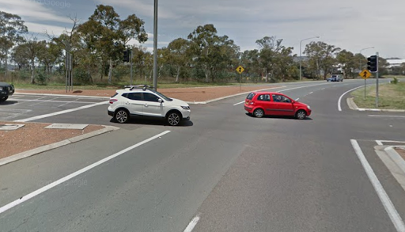
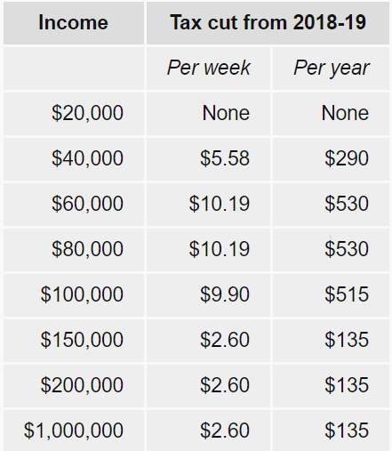

Australian Budget 2018
TL; DR
Every year, the treasurer of Australia stands up in the parliament, and talks about how Australia will spend its money over the next year. After 117 years of doing the budget, you would think that the government would be pretty good at this thing, right?
Right?
Scott Morrison, the current treasurer, announced his budget for the upcoming year on Tuesday, the 8th of May and boy oh boy was there a lot inside it.
For our coverage on the budget, scroll down. For more information, check out this ABC Winners and Losers page.
http://www.abc.net.au/news/2018-05-08/federal-budget-2018-winners-losers/9738982
Okay onto our coverage.
Before you do anything, though, give yourself a firm and encouraging pat on the back. Getting involved in politics means you are on your way to becoming an informed reader.
What is the Budget?
Geez, I really hope you aren’t wondering that.
Whatever, no judgement here, everyone’s gotta start somewhere!
In a sentence, the Budget is a document that predicts how much the government will be spending and how much the government will be earning for the next financial year.
The government uses the Budget to attract more voters by offering things like tax cuts or road upgrades.
By the way, financial years aren’t the same as the normal calendar, which is why you have end of financial year sales in June.
Road Projects for the ACT
TL;DR TL:DR Monaro highway and Barton highway are getting wider
Whatever, no judgement here, everyone’s gotta start somewhere!

$100 million is going towards widening the Monaro and Barton highways and also to add a ‘flyover’ for the intersection between Lanyon drive and Monaro Highway.
If you know where this intersection is, congrats on your future bridge thingo. If not, it probably doesn't matter for you anyway.
Personal tax cuts
TL:DR Depending on how much you (or more likely your parents) earn, you could be paying up to $530 less in taxes this year.
Ok this is the big one.

If you look at the table to the side, which I definitely did not take from the ABC (just in case I get sued, I did take it), you can see how much tax will be reduced for a specific income.
The government plans to increase the tax cuts in future, especially for higher income citizens, but let's not talk about that because government's change leaders like every 2 years now and also Labor might come in and just scrap all of it.
Anyway, this is a clear move to get low and middle income earners on their side, as they are getting the most cuts. However, other than people earning below $20,001 (who don’t get taxed), everyone gets at least some tax cuts.
Hooray, free money.
Kinda.
Labor, the opposition, have said that they will almost double the government’s tax cut, if elected. For example, if you were earning 60,000 under Labor, you would have a $928 tax cut, rather than $530.
If this sounds too good to be true, it probably is. All political parties do this, the old bait and switch.
Scammers also do this.
ABC Cuts
TL:DR ABC has had about $120 million in cuts, it’s almost like they aren’t effective or something.
Not much to say here, $84 million is technically being cut due to the ABC’s annual funding indexation being frozen for 3 years and $43 million in news and current affairs is being cut.
ABC is mad.
Right: Cuts to the ABC’s leave readers mad and slightly confused.
Great Barrier Reef
TL:DR The government is finally taking action on something people want.
Hey, remember the Great Barrier Reef? You know, that small, insignificant natural wonder near Queensland?
The government is finally taking action now, spending $500 million to help reduce bleaching and the death of coral in the GBR.
This will include, helping kill the slimy little biological freaks that are the Crown of Thorns starfish.
Thanks for reading, subscribe!
Politics Global Trump
Published on the 14/4/18